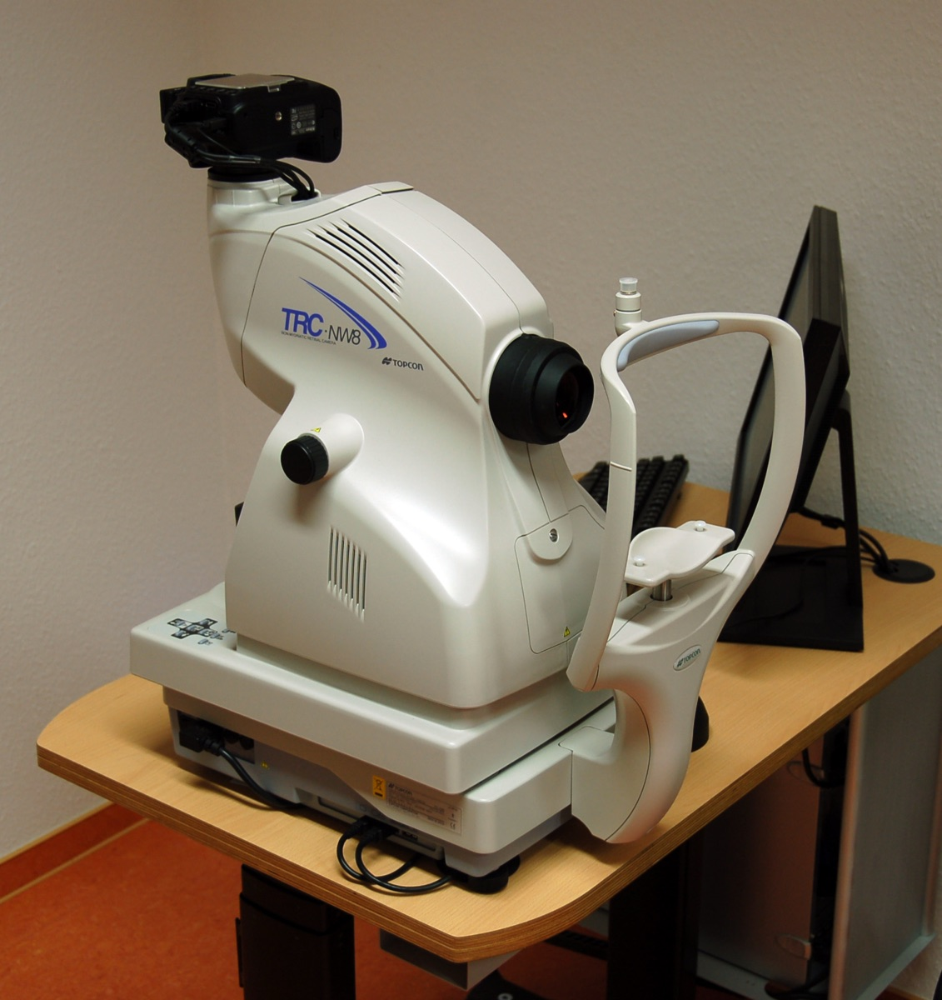

Executive Summary
This article reads The 2026 Healthcare AI ROI Scorecard, published by Bessemer Venture Partners and Bain & Company on September 30, 2026, against both the full public text and the 35-slide deck attached to it. The survey asked 226 US provider, payer and pharma executives what came back after they put AI into 65 activities, and ranked those activities by how much money returned and by how far the machine is allowed to go on its own. The shape of the result is clear. The work that runs with little or no human sign-off is concentrated outside the exam room.
Reading that contrast as "only billing got automated" gets it wrong. Payer member engagement runs at the same level, and so does provider front office work. The split is not between billing and everything else but between administrative and clinical work, and the report says so itself. Put all nine domains on one chart and the line narrows by one more notch. Pharma clinical development sits at 36%, so the outlier is not "clinical" in general but provider clinical work: the seven judgments made in front of a single patient. And what the report blames for the clinical standstill is not model performance. It is four things — clinicians do not trust the output, the attending physician carries the liability when something goes wrong, the regulatory path is uncertain, and insurers will not pay for it. Data is not on that list.
Everything above is checkable by anyone who opens the public documents. What follows is this article's reading. The returns in this survey are not audited financials but multiples executives wrote down about themselves, and the report explains the gap between the two domains as a difference in what each counts as value. Administrative value lands inside a one-year budget and attaches to a specific system; the report never attached those qualifiers to clinical value. And of the conditions clinicians named for trusting clinical AI, the four named most often were all records that have to survive the work. How much of the gap is worth and how much of it is counting, this survey cannot separate.
67% · 4%
Running with little or no human sign-off
Provider revenue cycle work and provider clinical work. The other seven domains are spread across 31–62%, which leaves provider clinical as the only outlier
4.0x · 2.9x
Realized return multiple for those same two
Neither is an audited financial result. The report labels the axis itself as self-reported by executives
46–96%
Override range for clinical alerts that predate AI
Pooled from 23 studies (2000–2019). The report's 77% is not an override rate but the share who said they override more than half the time, and that "half" is the bottom notch of this range
48% · 5%
Payers unwilling to reimburse
For AI care with no human in it, and for AI care a clinician confirms. The same question, a nearly tenfold spread
Line the activities up and the administrative ones sit on top
Start with the frame of the survey. Bessemer Venture Partners, working with Bain & Company, published The 2026 Healthcare AI ROI Scorecard on September 30, 2026. It asked 226 executives, and that number covers three groups, not hospitals alone: providers, payers and pharma. It covered 65 activities, run on last year's frame but, in the report's own words, "expanded into clinical AI and investment returns." The "4% in clinical" that follows is not a blend of the three groups. It is provider clinical work. Mix the populations and the sentence is wrong where it stands.
The taxonomy matters just as much. Slides 32 and 33 of the deck lay out all 65 activities by group and function, and the provider clinical function holds seven: patient triage, diagnostic support, differential diagnosis generation, treatment recommendations, intelligent surgical support and robotics, lab results interpretation, and care gap identification. Every one of them is a judgment made with one patient in front of you. What is most often called "clinical AI" today, the ambient scribe, is filed not under clinical but under front office, and so are trial patient coordination, outpatient navigation and follow-up visits. Medical coding, prior authorization and denials and appeals management belong to the revenue cycle function. So "4% in clinical" is a figure for those seven activities.
Most of those seven are new seats this year. Slide 2 describes the 2026 survey as "the same activities as 2025 plus six provider clinical AI activities," which means six of the seven were asked about for the first time this year. Which one carried over from last year is not marked anywhere in the deck, so that could not be determined.
What sets this survey apart from other healthcare AI surveys is that it runs on two axes: how much has been adopted, and how much money came back. A third gauge is clipped onto those two — whether the machine carries the work to the end without a human approving it. The report calls that gauge the tell, and puts three domains in a single sentence.
"Two-thirds of provider revenue cycle respondents now run semi- or fully autonomous agents, and 62% do so in payer member engagement. In provider clinical work, the figure is 4%. Where organizations have handed the work over entirely, they have handed over administrative work."
That last sentence is where this article starts. Lift out the two numbers on their own and the picture becomes billing going over to the machine by itself. The report's own figures do not hold that picture up. Payer member engagement is at 62%, and open slide 22 and provider front office work runs at the same level, 49%. The title of that slide is the report's own summary: semi- and fully autonomous agents are taking over more and more administrative work. The dividing line runs between administrative and clinical work.
1.1Put autonomy and returns on one chart and one clinical point drops out on its own
The body of the report lists realized return multiples for nine domains, and slide 22 of the deck carries autonomy rates for the same nine as a bar chart. The domain names match on both sides, so the two can be laid over each other. The horizontal axis is the share of that work the machine carries without a human approving it; the vertical axis is the return multiple executives reported for themselves.
The horizontal axis is the "semi- or fully autonomous agents" share from slide 22 of the deck; the vertical axis is the list of realized multiples by domain in the body text. Both sides name the same nine domains, so they map one to one. Labels are shortened here: Provider RCM is revenue cycle management, Payer member is payer member engagement, Payer claims is payer claims review, Pharma clinical dev is pharma clinical development. The scorecard graphic on the public page plots all 65 activities as dots but prints no coordinates, so only the nine with figures written out in prose are used. The two dark points are the ones the report itself labels clinical.
The first thing you see is the point sitting alone on the left. The other eight are spread between 31% and 67%; provider clinical is at 4%. The second thing is that the two axes do not move together. Payer claims review is second from the bottom on autonomy at 31% and second from the top on returns at 3.4x. Pharma commercial is mid-pack at 48% on autonomy and second from the bottom at 2.6x on returns. Inside these nine points there is no straight line running from autonomy to money or from money to autonomy. The report says as much when it names the upper-left quadrant the place where "returns are proven and the market has not moved yet," and puts the next wave there.
Third, there is one more domain with "clinical" in its name. Pharma clinical development is at 36%, nine times provider clinical. Trial design, patient recruitment, data management and regulatory work all carry the clinical label, and they sit among the administrative boxes. The line the report drew runs between administrative and clinical, and inside providers and payers that line holds. But with all nine on the chart, the one box that falls away on its own is provider clinical work, the seven judgments in front of a patient listed above.
1.2Every multiple clusters around three
Take the returns on their own and the spread between domains is smaller than it looks. Every value the report prints falls between 2.3x and 4.0x, and the report notes that "every activity surveyed clears or approaches the 3x threshold enterprise buyers typically require." Clinical did not fail this survey on returns. What it failed on is how much has been handed over.
| Activity | Group | Realized multiple |
|---|---|---|
| Revenue cycle (billing) | Provider | 4.0x |
| Claims review | Payer | 3.4x |
| Preclinical discovery | Pharma | 3.4x |
| Network management | Payer | 3.3x |
| Member engagement | Payer | 3.2x |
| Front office | Provider | 3.1x |
| Clinical | Provider | 2.9x |
| Commercial | Pharma | 2.6x |
| Clinical development | Pharma | 2.3x |
The list of realized multiples by domain in the body of the report. The report puts the overall average at 3.5x and payback at roughly 12 months against an expected 24. In the report's phrasing, "nearly every AI budget approved in the last two years was built on a payback assumption that was wrong by half."
The ratio between the highest and lowest multiple is under two. The ratio between provider revenue cycle and provider clinical on autonomy is more than sixteen. There is a gap on the autonomy side that the money does not explain.
Deployment does not explain it either. Slide 7 of the deck splits activities by adoption stage, and the share that has reached full deployment or operation inside providers runs 14% in front office, 10% in revenue cycle and 9% in clinical. On the payer side it is 10% for member engagement, 5% for claims review and 4% for network management; in pharma it is 7% clinical, 6% preclinical and 3% commercial. Rank the nine boxes by full deployment alone and provider clinical at 9% is fourth from the top. These figures and the autonomy figures have different denominators and ask different questions, so they are not values to subtract from each other. But at minimum, "clinical autonomy is low because AI has not been deployed there yet" does not stand up inside this survey. On deployment the two sit in effectively the same place, revenue cycle at 10% and provider clinical at 9%, while the handover between those same two differs by sixteen times.
The report attributes that gap to the four brakes covered in section 4. Before those, though, the sharpest reversal in this survey is on neither returns nor autonomy. It is on headcount.
The jobs being cut are the jobs that are short-staffed
The clearest evidence the report offers that AI is past the pilot stage is not the returns. It is headcount planning. Half the organizations surveyed said they have already reduced staff, or plan to within six months, with AI as the direct reason. The average reduction is 8–13%.
That figure has already been carried wrong once. One trade outlet rendered it as "8 to 13 percent of the total workforce," where the report says "the affected function." Slide 24 of the deck prints the survey item itself, which leaves no room for argument: it asks by how much headcount in that function or department has fallen or will fall on average. Enterprise headcount was never the question. The per-activity values on that same slide run from 8.00% in member engagement to 13.28% in payer claims operations, and the "8–13%" in the body is the two ends of that spread.
Where the cuts are aimed is the heart of this section, and the report's sentence is short: "cuts follow the money." Among providers reporting reductions, 73% named revenue cycle and billing. That is the same activity that ranks first in this survey on returns (4.0x) and first on autonomy (67%). The payer side has the same shape, with claims operations at 71% and member engagement at 68%.
| Function named for reduction | Group | Share naming it | Autonomy, same work |
|---|---|---|---|
| Revenue cycle and billing | Provider | 73% | 67% |
| Claims operations | Payer | 71% | 31% |
| Member engagement and call center | Payer | 68% | 62% |
| Utilization management and review | Payer | 54% | — |
| Clinical research | Provider | 49% | — |
| Care coordination | Provider | 40% | — |
| Patient collections and financial services | Provider | 40% | — |
| Enrollment and eligibility | Payer | 35% | — |
| Development | Pharma | 22% | — |
| Medical affairs | Pharma | 19% | — |
| Disease and brand teams | Pharma | 16% | — |
| Manufacturing | Pharma | 8% | — |
All of slide 25. The slide is titled "workforce reductions are concentrated in administrative work, with direct clinical work largely untouched." The autonomy column is filled only where one of the nine domains in section 1 carries the same name; the dashes are places the report did not measure autonomy separately. Payer claims operations ranks second for reduction at 71% while its autonomy is 31%, which puts the plan to cut ahead of the handover.
Pharma is the group least likely to cut at all, at 44%. The report suggests this is "likely because pharma carries less of the administrative duplication that defines the payer-provider relationship," then immediately adds that "our data doesn't test this directly." That is the only place in the report where it pins a caveat to its own conjecture. Split by size and the shape changes again: slide 23 shows providers reporting cuts or plans at 52–64% almost regardless of size, pharma rising with size (30% small, 51% large), and payers peaking in the middle (69%) with the largest lowest (36%).
2.1Then the report overturns that picture in its next paragraph
Read only that far and it closes as "AI is pushing out healthcare administrative staff." The report itself blocks that conclusion in the paragraph that follows.
"In reality, healthcare has no surplus of administrative workers to shed. It has a shortage in the exact functions AI is being pointed at, and an aging workforce that is already set to widen the same gap on a slower timeline."
It goes on to put the medical coder shortage at roughly 30%, the average age of a credentialed coder above 50, and the time to credential at 6–18 months with another one to two years to proficiency. All three are attributed to the American Medical Association, and those three lines are the ones without a source link. Checked directly, the 30% shortage circulates in the industry as an AMA-sourced figure, while the average age and the credentialing timeline read closer to descriptions that circulate from the AAPC side. Neither primary document could be opened, so this is not called an error. How far shortage estimates diverge inside the same industry is worth recording: the AAPC published a national coding workforce gap of 12% in 2025. The 30% and the 12% come from different bodies using different methods.

The shortage itself is confirmed in institutional primary sources. Costs of Caring 2026, published by the American Hospital Association in March 2026, reports that as of 2024 the average hospital employs about 64 people in administrative and billing roles, roughly 6.5% of total hospital employment. The same report records which way the burden runs: prior authorization, claim denials and repeat documentation requests push hospitals to staff large billing, coding, review and appeals teams while "pulling clinicians away from the bedside." It estimates that hospitals spent $43 billion in 2025 chasing payment for care already delivered, and $18 billion on overturning denied claims alone.
So the report reframes the cuts as a redeployment question. Noting that much administrative work is done by clinically trained people — the nurses attached to prior authorization and utilization review — it argues that when an agent takes the queue, the question is not only what was saved but where that capacity goes. The report's own example: "Move a utilization review nurse into care management and a headcount reduction in one cost center becomes capacity in a function the organization cannot currently hire for."
That destination sits inside the same survey's reduction list. Look again at the provider rows above: care coordination is at 40%. Two in five providers reporting cuts named care coordination as an affected function. The deck's label is "Care Coordinator" and the body's destination is "care management," and whether those two words point at the same seat cannot be settled from the deck alone. What can be said is that the function the report calls impossible to hire for and the function respondents named for cutting sit side by side under the same name on one page.
This redeployment is a design proposal the report puts forward, not a measured case. No named institution was found that automated this work, moved clinical staff back into care, and measured the effect. The closest examples state a design philosophy and a goal without publishing hours freed or people moved. The report's sentence should be read that way: not as something that happened, but as something written down as what ought to happen.
Administrative and clinical work count different things as value
Back to the vertical axis from section 1. The report states what that axis is in its "how to read the scorecard" note: "The vertical axis is realized ROI, the self-reported return multiple on money already spent." Not an audited financial figure, but a value an executive wrote into a survey. The horizontal axis of the report's own scorecard graphic carries a similar footnote. That axis is not the autonomy measure used in the chart above but "overall adoption," a weighted average that scores "not yet started" at 0% and "deployed or fully scaled" at 80%. So the horizontal coordinate in that graphic should not be read as a plain adoption rate.
Pointing out that the returns are self-reported is not new with this article. A trade publication wrote shortly after publication that "the ROI figures are self-reported by surveyed executives, not independently audited financial outcomes," and added that "revenue cycle AI delivers exactly 4.0x" should not become an industry law. The same piece noted that Bessemer is an investor in companies the report names.
What this article wants to look at is the next box over. Self-reporting does not behave the same way in every domain. And the party that wrote that down is not an outside critic. It is the report.
"When asked which benefits matter most for each activity, executives describe different sources of value for administrative and clinical work. This difference explains most of the ROI gap between them."
The report then says what those different sources are. On the administrative side, what executives named was throughput and incremental revenue, with labor savings close behind — benefits that, in the report's words, "land inside a one-year budget and attach to a specific system." The clinical side is different. The report says clinical AI returns are "concentrated in decision optimization and quality improvement, with labor savings and revenue lift barely registering."
| Value executives named | Lands in a one-year budget? | Attaches to a specific system? | |
|---|---|---|---|
| Administrative work | Throughput, incremental revenue, labor savings | Yes | Yes |
| Clinical work | Decision quality, care quality | The report does not say it does | The report does not say it does |
The left two columns are verbatim from the report. The conditions in the right two columns are qualifiers the report attached only to administrative benefits; it did not attach them to clinical ones. The empty cells are written this way so they are not read as a "no."
3.1The report attached the same caveat only to pharma
Here is how the report explains why pharma sits earliest of the three groups: "Pharma is earliest because drug development timelines dwarf a one-year measurement window, making attribution genuinely difficult." That turns a low number into a measurement problem rather than a performance one. The report attached that caveat to pharma. It did not attach it to clinical.
Follow the report's own sentences, though, and the same condition stands on the clinical side. Decision quality does not drop into a one-year budget as a number, and it is hard to attribute to any single system. Which means that how much of the gap between 4.0x and 2.9x is worth and how much is counting cannot be separated. Closing here with "2.9x is an illusion" would go further than the evidence. What this survey supports is only this: the two cannot be told apart.
One experiment has measured the distance between self-report and measurement in the same people. Sixteen experienced developers were given 246 open-source tasks with AI tool use randomized, and the group using the tools was 19% slower. Before the study they expected AI to make them 24% faster, and after experiencing the slowdown they still reported being 20% faster. This was software development, and the sample is small. It is not a number to transplant onto executives' multiples. It is, though, one of the few records showing which direction self-report drifts when it drifts.
Put together: the report produced a ranking of returns, disclosed that the ruler behind that ranking is self-report, and explained the gap between its two domains as a difference in what counts as value. If that "what" is the kind of value that lands inside a year and attaches to a system, then this ranking is a ranking of worth and at the same time a ranking of how attributable the worth is. How much of each is mixed in is a question this survey did not ask.
The report names four brakes on clinical AI
So is the real blocker in clinical work measurement, or data? The report's answer points elsewhere. What it names as the causes of the clinical standstill are four, and neither data nor the structure of records is among them. The table below is the report's own list. Its summary sentence: clinical AI is stalled "not because of model performance but because of trust, liability and reimbursement."
| Brake | Figures the report prints |
|---|---|
| Trust | Trust AI used in clinical decision support: 46%. Say they override more than half of AI recommendations: 77%. In the report's phrasing, clinical AI is "in the workflow but not relied on" |
| Liability | Providers saying the attending clinician carries primary liability for an AI-involved clinical decision: 58%. Saying legal exposure keeps projects from getting past proof of concept: 50% |
| Regulation | Providers that delayed or cancelled clinical AI adoption over regulatory or compliance uncertainty: 36% |
| Reimbursement | Payers unwilling to reimburse fully autonomous AI care with no human in it: 48%. Objecting to clinician-confirmed AI-assisted care: 5% |
The report's "four things blocking clinical AI" section. Note that 36% appears twice inside the report, in the same sentence under both the liability and the regulation heading. The report also names these brakes differently in three places: "trust, liability and reimbursement" in the introduction, "liability, reimbursement and compliance" in the key-takeaways list, and "four" in the body. This article follows the four in the body.
Two of the four, liability and reimbursement, are not problems data solves. Who bears legal responsibility when something goes wrong is set by institutions, and so is whether insurance pays. However well the records are kept, those two stay where they are.
4.177% is not an override rate. It is the share of clinicians who override more than half the time
Of the four figures, 77% is the most quoted. The report reads it as evidence of distrust but defends it in the same breath: "77% override is not irrational caution. It is predictable behavior from professionals who carry the risk in their own bodies." Somewhere in the quoting, though, the unit slips. What the deck prints is "77% of respondents override clinical suggestions more than half the time." That is not seventy-seven out of every hundred recommendations going in the bin. It is close to eight in ten clinicians reporting that their own override rate runs past half. And the report leaves that figure without a comparison. Clinical settings had machine-generated alerts long before AI, and how often those were overridden has been measured for more than twenty years.
One systematic review pools override rates for rule-based clinical decision support alerts. It gathers 23 studies from January 2000 to March 2019, covering twelve alert types including drug interactions, allergies, duplicate therapy, dosing and renal function. Its conclusion is short: "The range of average override alerts was 46.2%–96.2%." The same review puts the share of those overrides that were appropriate at anywhere from 29.4% to 100%. A 2024 meta-analysis restricted to drug-drug interaction alerts pools the override rate at 90%.
So the number to lay against that band is not 77%. The 77% counts people and the band measures override rates, which makes them different units to begin with. What can be laid against it is the line the survey drew — the 50% in "more than half the time." And almost all of that band sits above 50%. A clinician who overrides more than half of what AI suggests is barely reaching, and may be falling short of, what twenty years of literature records as the average. That is why close to eight in ten crossing that line does not look like something AI brought on.
The grey band is the range of average override rates pooled in a systematic review of computerized prescriber order entry alerts (23 studies, 2000–2019, twelve alert types). The orange line is the threshold the report's survey drew — "more than half the time," or 50% — and 77% of respondents said they sit above it. The 77% itself is not a value that plots on this axis; it counts people. Band and line were not measured with one ruler either: one reads the alert logs of order entry systems, the other reads executives' self-report in a survey.
So 77% is hard to treat as a reaction clinicians have to AI specifically. Waving off most of what a machine puts on the screen is close to the clinical default, and it predates AI. The report's defense is the better-supported side of its own paragraph, and the support for it runs wider than the report offered. The two sets of figures were still produced by different methods. Override rates were counted in system logs; the 77% was written into a survey by executives. That the line the survey drew sits at the low end of the literature's band is as far as this comparison goes.
4.2Strip the qualifier from "no regulatory pathway" and it turns false
The third brake reads: "There is no established regulatory pathway for indication-agnostic clinical intelligence, and no defined post-market surveillance regime for semi- or fully autonomous clinical AI." Split that into its two clauses and they land differently.
The first clause rests on its qualifier. A precedent for authorizing autonomous AI diagnosis already exists. The US Food and Drug Administration granted IDx-DR's De Novo request on April 11, 2018, the first autonomous AI diagnostic system in the United States to deliver a screening decision without clinician interpretation. That authorization created a new device type, "retinal diagnostic software device," and the agency states it has authorized more than 1,600 AI-enabled medical devices as of September 2026. So carrying "there is no regulatory pathway" without the qualifier makes it wrong. What is missing is not a pathway but a pathway fitted to general-purpose clinical intelligence that does not care which indication it is used for. The precedent is a narrow road that starts at diabetic retinopathy.

The second clause mostly holds. The one settled instrument is the predetermined change control plan guidance finalized December 4, 2024, and that guidance is non-binding and covers pre-authorization of post-clearance model changes, not an obligation to monitor performance. The lifecycle management guidance released in January 2025 is a draft, and real-world performance measurement is still a discussion paper out for comment. No mandatory performance surveillance rule was found.
Inside the survey, that uncertainty registers as the largest brake. Slide 9 of the deck asks, activity by activity, whether a planned AI deployment was delayed or cancelled in the past twelve months because of regulatory or compliance uncertainty, and the report calls the answers the single biggest driver of delay and cancellation. The same slide records that 72% of organizations now have an AI governance committee through which purchasing, procurement and deployment decisions pass. Where 2025 had scattered experiments, decisions now converge on one room — and what that room is looking at is regulatory uncertainty.
4.3Korea already wrote "a human decides" into its payment formula
On the fourth brake, reimbursement, the report closes this way: "Human-in-the-loop is what gets paid today." On the US figures, 48% of payers are unwilling to reimburse fully autonomous care and 5% object to clinician-confirmed care. The narrow areas where payers showed willingness are primary and preventive care and AI diagnostic support at 44% each and medication management at 43%, and slide 30 of the deck adds remote patient monitoring at 37%, AI-assisted triage at 35%, mental and behavioral health support at 35%, and chronic disease management at 35%.
What the body splits into two, slide 29 of the deck asked in four steps. First, AI surfaces information and the clinician makes and approves every decision. Second, AI recommends actions and the clinician reviews and confirms. Third, AI makes the clinical decision and a human reviews asynchronously after the fact. Fourth, AI decides and acts with no human review required. The 48% and the 5% carried into the body are the two ends of that ladder, and the middle two rungs appear in the deck only as a graph with no printed values. The third rung's definition is worth keeping, though: it is not a design where the human is removed but one where the human looks later. Section 5.3 picks that sentence up again.
For Korean readers, that closing line of the report — that human-in-the-loop is what gets paid today — is not a forecast but a rule already in force. On December 26, 2023, Korea's Health Insurance Policy Deliberation Committee approved reimbursement for AI innovative medical technologies and set payment product by product at "the level of 10% of what a radiologist is paid to read," given that the AI role is diagnostic support. The amounts are 2,920 won for pathology, 1,810 won for special imaging, 1,180 won for endoscopy and ultrasound, and 310 won otherwise. It is an add-on built on the premise that a human reads. The US autonomous diabetic retinopathy exam code is designed the opposite way: it prices the replacement of clinician interpretation.
The side that reviews claims wrote the same principle down first. When Korea's Health Insurance Review and Assessment Service began applying AI medical imaging readings to claims review on September 1, 2026, it built internal operating and ethics standards first, stating that "the final judgment is performed by a human" and that an AI reading alone does not decide payment or reduction. The first area is knee osteoarthritis, with plans to extend to spine and urinary stones. For context, one count puts 49 of the 549 AI medical devices licensed by Korea's drug regulator under health insurance coverage, about 8.9%. That count came through media coverage of a society's materials rather than a primary document, so it is reported at that distance. No Korean reimbursement for care adjudicated by AI without a human was found.
What clinicians asked for most often, they asked for as records
On trust the report takes one more step. It asked clinicians what would make them trust clinical AI, and described the answers as "specific and buildable." The body carries four of them; open slide 28 of the deck and the same question offered eight options. The body printed the top four and left the other four out. All eight look like this.
| What clinicians asked for | Share | What has to survive for this to exist |
|---|---|---|
| Stronger clinical validation evidence | 67% | A record of which patient populations this model was tested in, against what, with what outcome |
| Transparent recommendation rationale | 53% | Reasoning stored alongside each individual output and retrievable later |
| Patient-specific performance data | 48% | A record that can be split into subgroups rather than reported as one average |
| Seamless EHR integration | 44% | Output that enters the existing record system as its own fields |
| Peer or specialty endorsement | 31% | A shared history of use within the same specialty, and what came of it |
| Fuller patient context | 28% | A marker that the output was built on that patient's prior record |
| Clear liability framework | 19% | Not a record question. Institutions decide this one |
| Use case-specific regulatory clearance | 11% | Not a record question. Institutions decide this one |
Slide 28 of the deck. Only the four marked in orange appear in the body of the report; the lower four exist in the deck alone. The right-hand column is this article putting the left-hand items into operational terms, and is not written that way in the report. Note that patient-specific performance data appears as 48% in the deck and 47% in the body, one point apart — this article follows the value printed on the graph.
Set all eight side by side and one thing stands out. Not a single item asks for a more accurate model. And the four named most often are all requests for material that has to remain after the work is done. Validation evidence, the reasoning behind a recommendation, patient-specific performance, a join to the existing record: none of them arrives by swapping the model. They come from how the record of that work was designed to survive. The fifth and sixth items sit a little differently. Peer or specialty endorsement is a judgment made by people rather than a record, and fuller patient context points at the input side rather than at what follows the output.
The two items asking for institutional change are, of all places, at the bottom. A clear liability framework at 19%, use case-specific regulatory clearance at 11%. As section 4 showed, two of the four causes the report names for the clinical standstill are liability and regulation — and when the same survey asked clinicians themselves what would make them trust the output, liability came back seventh and regulation eighth. Both are under a third of validation evidence at the top.
That does not mean clinicians take the liability question lightly. Liability was asked separately, and there 58% said the attending clinician carries primary responsibility. The two items ask different questions. This one asked not what the barrier is but what would have to exist for them to trust it more than they do now, and the answer that came back was evidence rather than institutional reform. Institutions are not something a clinician can build. Records are something the system they use can build.
5.1The report names the same layer in two sections and never joins them
The report's final section picks the clinicians' list back up. The layer teams running agents outside healthcare treat as standard around a model — evaluation, performance monitoring, guardrails, agent orchestration — "maps almost exactly onto what clinicians said they need to trust AI output, and onto what regulators will eventually require for post-market surveillance."
The report names that same layer once more in an entirely different section: where it explains why organizations abandoned building in-house. The failure, it says, was not in the building. "Internal teams can build a working MVP. Fewer can take it to operational reliability, monitor it, maintain it against changing models, and defend it in an audit." In the 2026 survey, 61% of organizations said half or fewer of their internally built tools are still in use, and 32% said fewer than a quarter survived. That shows up in market numbers too: in-house builds fell 16 percentage points as a share of recently developed AI solutions while healthcare-specific AI vendors gained 12 points. Forty-two percent of buyers have completed or begun vendor consolidation. The report's summary: "buyers have moved from selecting capability to buying implementation, and most of the market is still selling the former."
The two sentences point at the same thing. The list clinicians gave as conditions for trusting clinical AI and the list the report gives as the reason in-house builds died are one layer. The report names that layer separately in two sections and never joins them. What this article can add is putting the two boxes side by side.
The money, though, is not going to that layer. Slide 8 of the deck asks where next year's incremental AI investment goes, and scaling validated activities takes 35% with embedding into existing workflows at 20%, over half between them. Infrastructure, data and compute take 13%, people and capability 12%, platform and foundation model fees 11%. And AI governance, risk and compliance takes 8%, with AI security and privacy at 1%. The layer the report points to twice, as the condition for clinical trust and as the cause of death for in-house builds, is second from last in next year's budget.
One more thing. When that final section re-counts what clinicians asked for, what sits inside the parentheses is three: validation evidence, recommendation rationale, patient-specific performance. EHR integration (44%) is missing. Of the four the body carried, it is the only one that has to mesh with an existing system outside the model, and the only one that does not appear by building a good evaluation and monitoring layer. That is where the gap falls.
5.2Structured codes and free text overlap in one direction only
Whenever someone argues that clinical records do not reduce to codes, the figure "80% of clinical data is unstructured" tends to follow. This article does not use it. One medical journal review calls it a frequently cited but never demonstrated estimate, and the claim's roots have been traced to enterprise data rather than to medicine.
There is a study that actually counted. Working in a Dutch primary care electronic record database, researchers pulled records for 1.8 million patients from January 2021 to January 2024 and matched clinical concepts extracted from free text against concepts written as structured codes using semantic similarity. The result is asymmetric in the two directions. Of concepts written as structured codes, 42% had a counterpart in the free text (25% at the visit level); in the other direction, of concepts extracted from free text, 13% had a counterpart in the structured codes (7% at the visit level).
This is Dutch general practice, not US hospital clinical notes, and the numbers do not transfer as they stand. The direction is clear enough. What is written in structured codes mostly shows up in the narrative too, but most of what is in the narrative does not come back as a code. Which means that information actually used in a clinical judgment has a low rate of landing anywhere a machine can read it afterwards.
5.3Billing went first, and not because it has right answers
So what about the other side? It is tempting to say billing was automatable because standard code sets and validation rules let a machine rule each item right or wrong. Check it and that is half true.
The true half first. Claims and payments are standardized as electronic transactions, and as of 2025, 81% of claim status inquiries and 78% of payments move electronically. Denials carry reason codes. So for every claim, a verdict comes back from outside, and that verdict is written into the record as a code.
Here is the half that fails. Nothing guarantees the verdict is right. A study of roughly 51,000 external appeals in New York State from 2019 to 2025, published in a journal in April 2026, found the share of denials overturned on appeal rising from 38% in 2019 to about 53% in 2025, with a spread across insurers from about 36% to 85%. Public coverage data shows the same shape, with overturn rates on appealed prior authorization denials reported at 67% in Medicare Advantage, 47% in Medicaid managed care and 43% in exchange plans. The report itself puts denials and appeals management at the top of the provider pain list at 78%, and calls the state where both sides mirror each other across the same dispute an "AI versus AI battle." The seven provider pain points on slide 26 of the deck run denials and appeals 78%, prior authorization 61%, underpayment management 48%, clinical documentation and payer compliance 46%, payer contract management 44%, Medicaid and Medicare enrollment 40%, and medical coding 37%. Medical coding, the first thing handed to machines, sits last — though whether it hurts less because it was handed over, or was handed over first because it hurt less, this survey cannot separate.
So writing down "because it has right answers" as the reason billing went autonomous first gets it wrong. Billing has disputes too, and close to half of them flip when disputed again. What separates the two is not whether a right answer exists but whether a verdict comes back item by item. Right or wrong, billing gets an answer from outside for each claim, and that answer stays as a code. Clinical judgment has no such return. Nothing outside rules item by item on whether that choice was right for that patient, and where something does, it arrives years later.
The third rung of the ladder from section 4.3 earns its place here. The structure the report offers as a clinical option, where AI decides and a human reviews asynchronously after the fact, is already the default in billing. The machine attaches codes and sends them out, the payer returns a verdict later, and if it looks wrong one more round goes through appeals. Why the same rung on the clinical side is still only an option in a survey, the report attributes to liability and reimbursement. What this article adds is that there is one more box in front of those. There is no outside to take charge of that "later."
The same material reads the other way too. The report treats the round trip of verdicts as waste that ought to disappear. Of the roughly $1 trillion spent annually on administration it counts $260 billion as waste, and says most of that is not inefficiency inside one organization but "the cost of two organizations working against each other." Its closing sentence: "With aligned incentives and real-time adjudication, most of this work would not need to exist at all. The near-term value is in automating it. The trillion-dollar value is in making the workflow unnecessary." The verdict loop this piece counts as a condition of autonomy, the report counts as duplication to be removed. The two are not contradictory. The reading that automation came first because verdicts come back, and the reading that the round trip should never have existed, stand together on the same material.
This distinction, whether a verdict comes back item by item, is this article's interpretation and not something the report says. It does not replace the four brakes the report names. It does supply one box explaining why those four caught on the clinical side in particular. Trust accumulates when an outcome can be adjudicated afterwards, liability divides when there is a record of adjudication, and post-market surveillance and reimbursement review both end up asking for that record. For the same fault line seen from the other side, there is the evidence gap between AI that finds disease and AI that writes records. That piece looked at what frontline staff count as validation; this one looks at what executives on the buying and investing side count as return.
What to know before quoting this survey
The five sections above followed what the report says. This one covers what is worth knowing alongside those figures before quoting them. The aim is not to render a verdict but to leave readers reading with their eyes open.
6.1This year and last year were not measured with the same ruler
The report lays more than ten year-over-year figures directly against each other: treatment decision outlook from 84% to 71%, payer contract management from 19% to 37%, eligibility and enrollment from 35% to 56%, prior authorization from 32% to 46%. The two years those comparisons stand on differ as follows.
| 2025 edition | 2026 edition | |
|---|---|---|
| Respondents | 408 | 226 |
| Activities | about 60 | about 65 |
| Run with | Bain + Amazon Web Services | Bain |
| Published on | Both Bessemer and Bain | Bessemer only |
| Added this year | — | Six provider clinical AI activities |
Slide 2 of the deck. The verbatim on the last row is "the same activities as 2025 plus six provider clinical AI activities." Amazon Web Services appears as a joint partner on the cover of the 2025 edition and does not appear once in the body of the 2026 edition.
That the six added activities are all provider clinical bears directly on this article. The subject of the report is the gap between clinical and administrative work, and the clinical items grew this year. So the accurate statement is this: the two years differ in respondent count, in the range of items and in who ran the survey, and the report lays percentages from them directly against each other. The report itself says it ran "on last year's frame, expanded into clinical AI and investment returns." There is no basis for saying the figures are wrong.
6.2The same 67% carries two denominators
Quoting the 67% and the 4% from section 1 means choosing a denominator, because the report prints two. The key-takeaways list says 67% of solutions run as semi- or fully autonomous agents; the body says two-thirds of revenue cycle respondents. The most specific rendering of the 4% is "only 4% of provider clinical solutions." Yet the axis label on the slide 22 graph that carries those same figures reads "% of respondents."
Those are different denominators. One respondent can run several solutions, so the same phenomenon can produce two numbers. This article uses one phrasing throughout, "of the work that has been deployed," and records here that the denominator is written two ways. Mixing the two phrasings inside one piece makes a single number read as if it counted two different things.
6.3Survey results and the authors' own arithmetic share a paragraph
The two most widely quoted numbers in the report are not survey measurements. The sentence runs: health systems spend roughly $1 trillion a year on administration, most of it labor, and "taking roughly 10% of that" implies a $100 billion labor shift. The $1 trillion is an outside estimate cited without a link, and the $100 billion is the report's own arithmetic on top of it. The multiples and autonomy rates by domain, and the response rates on trust, liability, regulation and reimbursement, are all survey tallies. Put the two kinds on one line and which of them was measured disappears.
The five figures the report did link were checked against their sources. The AAMC projection of a shortfall of up to 86,000 physicians by 2036 is accurate. The $260 billion in administrative waste is a rounding down of $265 billion in the original. The figure putting preclinical at 25% of R&D spend is near one of three bases the original offers (6.8%, 27.0% and 40.2%), and the report does not identify which basis it used. The other two do not match their sources. The article behind $500 billion a year in drug spending actually estimated $480 billion on a 2016 basis, and the piece behind $150 billion in pharma R&D reports $159 billion for the top 16 companies. Not the whole industry.
6.4Sample design and response rate have never been published, in either year
How the 226 split across providers, payers and pharma, when the survey ran, how respondents were drawn, what the response rate and margin of error were, and what item and scale executives used to answer "realized ROI" appear neither on the public page nor in the deck. Slide 31 does carry respondent composition as graphs on seven axes — sector, clinical role, sub-function, organization type, department, seniority and revenue size — but no axis carries printed values, and the fielding period, sampling method, response rate and confidence intervals are in neither document. The 2025 edition discloses no more. So the figures in this survey are best read not as population estimates but as a tally of what the 226 who responded wrote down.
One conversion figure in the deck comes with tighter conditions. The claim that "clinical AI reaches proof of concept at rates similar to front office AI but converts to full deployment at half that rate" carries a footnote on the slide 27 graph. Only about half of provider respondents received that item, and it allowed multiple selections, so the shares sum past 100. One outlet rendered that "half that rate" as "reaches full deployment with about 50% probability," where the original is a ratio against the administrative AI conversion rate, not a probability.
6.5The conflict of interest is written into the body
A venture capital firm surveyed returns in the area it invests in and published the result. And it wrote that fact into the body. The report names Abridge and SmarterDx as winners of this phase and calls them "our portfolio companies" in the same sentence, and names Qventus alongside them as a partner in co-development and deployment support. Qventus does not carry that label directly, but the author bio on the same page records that a co-author sits on Qventus's board, and Qventus's own page lists Bessemer as an investor. The foot of the page carries a disclaimer that none of this is investment advice. It was written down, not hidden.
One addition. Check what the three companies do, by their own descriptions: Abridge started in clinical documentation and expanded into billing coding, SmarterDx does billing coding and revenue integrity, and Qventus does hospital operations such as surgical scheduling and patient flow. None of the three sits in the clinical work the report puts at 4% — diagnosis and treatment decisions. All three are administrative, or produce administrative output from within the clinical setting. That sorting is not something this article set up on its own; it is the report's own taxonomy. As section 1 noted, slides 32 and 33 of the deck file ambient documentation under front office rather than clinical, and medical coding under revenue cycle. There is no need to read this as evidence of contradiction. It is a statement of fact that the report's taxonomy and the portfolio's position point the same way.
Finally, who ran it. The survey instrument is Bain's, and every source line in the deck reads "Bain GenAI Survey (N=226)," but the 2026 edition was published on the Bessemer side alone. No Bain page of its own for the 2026 edition was found, and the structure of the 2025 edition, posted separately on both sites, was not repeated this year. For the record, Bain published a separate healthcare AI survey under its own name in 2026 with a different partner and a different sample, so the two should not be quoted as one. No Korean media coverage of this report was found within the search range.
Why This Matters to Pebblous
Our interests first. Pebblous has no relationship with this report, the firms that produced it, or the companies it names. There is another position worth stating, though. Pebblous also receives much of what it knows about deployment results as self-report from customers, and the three checks written below are not a formal part of our own process. This is a piece about reading someone else's self-report, so our own seat goes first.
This is the other side of where we inspect
What Pebblous does in DataClinic and AI-Ready Data is inspect data before it enters a model. Missingness, duplicates, distribution, label consistency. What this survey lights up is the other side. Of the eight conditions clinicians named for trusting clinical AI, the four named most often were not about input quality but about evidence for the output. However clean the input, if there is no way to adjudicate afterwards whether the output was right, that work does not go autonomous. The difference between billing and clinical work in section 5 lands exactly there. This survey did not measure that difference.
A ranking of returns is also a ranking of attributability
The quietest sentence in this survey is about the returns themselves. The report defined its vertical axis as a multiple executives wrote down for themselves, and explained the gap between its two domains as a difference in what counts as value. Administrative value lands inside a one-year budget and attaches to a specific system; the report never attached those conditions to clinical value. Which means that lineage, attribution and traceability, which we have treated as quality measures, come back here as the gauge of performance reporting. Turned around: an organization that has not recorded results so they can be attributed to a system has no way to prove what its AI earned. The problem is not whether it earned anything. It is that there is no proof.
Three things you can do now
First, sort the work you want to put AI into by "who adjudicates afterwards whether the result was right." Work where an outside party returns a verdict item by item — whether the claim was accepted, whether it passed review — is different work from work with no adjudicator, where the judgment stays with the person who made it. As section 5 showed, this is not because the verdict is necessarily correct. That it comes back, and that it is recorded, is what makes the difference.
Second, for work you want to hand to an agent, put the four conditions clinicians named most often into your own operational language and ask them. Is there validation evidence for this work? Does the output carry its reasoning? Can performance be broken out by segment? Does it enter the existing record system as it stands? The fourth is the one dropped from the report's final section, and usually the last one anybody gets to.
Third, check the denominator and the attribution behind the AI numbers you report. If you are counting only benefits that attach to a specific system, such as cost savings, that number is not the size of the result. It is the size of what could be counted. We have written once before about handling self-reported figures, in where survey answers and standards come apart.
At equal performance, the work you can adjudicate later goes first
The vocabulary used to sort AI adoption usually sits on the model side. Accuracy, performance, model choice. The box this survey opens is a different one. At equal performance, adoption splits between work whose results can be adjudicated afterwards and work whose results cannot. And that adjudicability is not obtained by swapping the model. It comes from how the record of that work was designed to survive. This distinction is what Pebblous can put into Korean first. Whether data is ready to go into a model and whether what the model did is ready to be adjudicated afterwards are two different inspections. The first has tools. The second still lives mostly in people's memories and meeting notes.
Every verbatim quotation in the body was checked directly against the full text of the Bessemer Atlas page and the 35-slide deck PDF attached to that same page. The deck downloads without a login or a form, and every figure that coverage carried but the public page does not contain is inside it, so it is attributed as primary. Clinical alert override rates, the overlap between structured codes and free text, claim appeal overturn rates, and the divergence between self-report and measurement were confirmed separately in literature outside the report, each with its population and year written into the body. Some things remain unresolved. The composition of the 226 by group, the fielding period and response rate, which six of the seven clinical activities in section 1 were added this year, the values of the middle two rungs of the payer willingness ladder, and the actual share of automated review in Korea could not be confirmed in public material. The original source of the coder shortage rate is not called an error, because neither body's primary document could be opened. Sections 1 through 6 are what the public documents report; the later part of section 3, section 5.3, and this section are the parts those documents do not cover, so please read them separately. Thank you for reading this far.
References
The subject of this article — primary
- 1.Sofia Guerra & Steve Kraus, The 2026 Healthcare AI ROI Scorecard, Bessemer Venture Partners Atlas, 2026-09-30. The full text was checked against a local copy. The page records that Caitlin Dowling and Eric Berger of Bain & Company and Mehr Suri of Bessemer worked on the survey.
- 2.Bessemer Venture Partners & Bain & Company, The 2026 Healthcare AI ROI Scorecard (35-slide deck, PDF), created 2026-10-01. Attached in downloadable form to the Atlas page above. The slides cited in the body are 2 (the two-year basis comparison and "six provider clinical AI activities added"), 7 (adoption stage distribution by activity), 8 (the 72% governance committee figure and next year's incremental investment allocation), 9 (the item on delays and cancellations from regulatory uncertainty), 22 (the nine autonomy bars and the axis label "% of respondents"), 23 (reduction plans by organization size), 24 (the verbatim reduction item and its per-activity values), 25 (the twelve functions named for reduction), 26 (provider and payer pain point lists), 27 (conversion rates and their footnote), 28 (the eight clinician trust conditions), 29 (the four autonomy rungs and payer willingness to pay), 30 (the seven areas of payer willingness), 31 (respondent composition), and 32–33 (the full list of 65 activities and the provider activity definitions). Every slide carries the source line "Source: Bain GenAI Survey (N=226)." ⚠️ The foot of slide 32 still carries the words "CONFIDENTIAL TRADE SECRET & NOT FOR DISTRIBUTION." The same PDF downloads from the public page without restriction, so it is treated here as public material, but anyone citing that slide is better off knowing.
- 3.Bessemer Venture Partners, The Healthcare AI Adoption Index (2025 edition), 2025-04. More than 400 respondents, 59 activities (22 payer, 19 pharma, 18 provider), Amazon Web Services named as joint partner. The 2026 body puts last year's respondent count at 408. · Bain's own 2025 page. No corresponding Bain page for the 2026 edition was found (a direct request returns 404).
- 4.Shania Kennedy, Health AI offers solid ROI but threatens workforce cuts, TechTarget, 2026-10-08. ⚠️ Two renderings in this piece are not used here: "8 to 13 percent of the total workforce" (the original says the affected function) and "reaches full deployment with about 50% probability" (the original is half the administrative AI conversion rate). Slides 24 and 27 of the deck refute both. Its stage distribution figures are also unused, since they do not sum to 100 (providers 89%, payers 93%).
- 5.RevCycleAI, 2026-10 — the observation that the ROI figures are executive self-report rather than independently audited financial outcomes, the sentence that "4.0x should not become an industry law," and the note on the publisher's investment relationships. Attributed in section 3 as prior work.
Checked outside the report — academic
- 6.Kim, J., et al., Appropriateness of Overridden Alerts in Computerized Physician Order Entry: Systematic Review, JMIR Medical Informatics, 2020. 23 studies (2000-01 to 2019-03), twelve alert types, settings including ICUs, teaching hospitals and academic medical centers. Verbatim: "The range of average override alerts was 46.2%-96.2%." Appropriateness of overrides, 29.4–100%. This is the comparison baseline in section 4.1.
- 7.Felisberto, M., et al., Override rate of drug-drug interaction alerts in clinical decision support systems: A brief systematic review and meta-analysis, Health Informatics Journal, 2024. Pooled override rate of 90% (95% CI 85–95%) restricted to drug-drug interaction alerts, across 11 studies and 570,776 prescriptions. Heterogeneity is extreme (I²=100%), so it is not read as a single representative value.
- 8.Seinen, T. M., Kors, J. A., van Mulligen, E. M., & Rijnbeek, P. R., Using Structured Codes and Free-Text Notes to Measure Information Complementarity in Electronic Health Records, Journal of Medical Internet Research, 2025-02-13, DOI 10.2196/66910 (earlier preprint: medRxiv, 2024-10-29, DOI 10.1101/2024.10.28.24316294). Dutch primary care database IPCI, 1.8 million patients, 2021-01 to 2024-01. Structured to narrative correspondence 42% (25% per visit), narrative to structured 13% (7% per visit). These are the figures in section 5.2. ⚠️ Dutch general practice records, so they are not transferred onto US hospital clinical notes.
- 9.A Frontiers in Medicine review identifying "80% of clinical data is unstructured" as an unverified commonplace. ⚠️ Cited here only as the basis for not using that estimate; the bibliographic details of the review itself could not be confirmed.
- 10.METR, Measuring the Impact of Early-2025 AI on Experienced Open-Source Developer Productivity, 2025-07-10. Randomized controlled trial, 16 experienced developers, 246 tasks. 19% slower with AI, 24% faster expected beforehand, 20% faster still reported after the experience. ⚠️ Software development and a small sample — used in section 3.1 only as a case of which way self-report and measurement diverge, with no conversion to healthcare figures.
- 11.Brown University, University of Texas at San Antonio and University of Chicago, JAMA, 2026-04-15 — approximately 51,000 external appeals in New York State (2019–2025). Share of denials overturned 38% to about 53%, home care above 78%, prescription drugs and dental above 50%, about 36–85% by insurer. This is the counter-evidence in section 5.3.
Institutional and regulatory — primary
- 12.U.S. Food and Drug Administration, De Novo DEN180001 (IDx-DR), 2018-04-11 — the first US authorization for autonomous AI diagnosis delivering a screening decision without clinician interpretation. Class II, new regulation 21 CFR 886.1100, supported by a pivotal trial of 900 patients at 10 primary care sites. The indication is diabetic retinopathy alone.
- 13.U.S. Food and Drug Administration, Artificial Intelligence-Enabled Medical Devices — more than 1,600 authorizations as of September 2026. The same page still carries real-world performance measurement as a discussion paper open for comment. ⚠️ The FDA states that the list is not exhaustive.
- 14.U.S. Food and Drug Administration, Predetermined Change Control Plan (PCCP) final guidance, Federal Register 2024-12-04 — non-binding, and covering pre-authorization of post-clearance model changes rather than an obligation to monitor performance. · Lifecycle management guidance, published 2025-01-07 — a draft. These are the basis for the judgment in section 4.2.
- 15.American Hospital Association, Costs of Caring 2026, 2026-03-11 (p. 4) — as of 2024, about 64 administrative and billing staff per hospital on average, roughly 6.5% of total hospital employment. Verbatim on administrative burden pulling clinicians away from the bedside. $43 billion spent in 2025 collecting payment, $18 billion on overturning denied claims. The underlying source is an annual survey of more than 6,200 hospitals.
- 16.CAQH, 2025 CAQH Index, published 2026-02-19 — claim status inquiries 81% electronic, payments 78%, electronic prior authorization 40%. Drawn from more than 600 organizations covering 63% of insured lives. ⚠️ The index measures transaction electronification, not auto-adjudication rates — section 5.3 keeps that distinction. · CAQH research brief — $83 billion a year in labor hours on standard administrative transactions, 97% of it borne by providers.
- 17.KFF, analysis of 2025 payer prior authorization disclosures (reported by 2026-03-31 under CMS-0057-F) — overturn rates on appealed denials of 67% in Medicare Advantage, 47% in Medicaid managed care and 43% in exchange plans, with wide variation by insurer.
- 18.AMA CPT 92229 (effective 2021-01-01) and the three AI service levels in CPT Appendix S (assistive, augmentative, autonomous; incorporated 2022-01-01, revised edition effective 2027-01-01). The verbatim definition of the autonomous level was obtained from the authors' own paper (R. A. Frank et al., npj Digital Medicine, 2022-12) — the official AMA page blocks direct requests (HTTP 403).
- 19.Ministry of Health and Welfare, 21st Health Insurance Policy Deliberation Committee, 2023-12-26 — reimbursement for AI innovative medical technologies set at "the level of 10% of what a radiologist is paid to read." 2,920 won for pathology, 1,810 won for special imaging, 1,180 won for endoscopy and ultrasound, 310 won otherwise. ⚠️ The ministry's original release URL could not be confirmed, so three trade outlets (Medical Observer, Pharm News, MediPana) were cross-checked.
- 20.Health Insurance Review and Assessment Service, application of AI medical imaging readings to claims review (2026-09-01) — internal operating and ethics standards state that "the final judgment is performed by a human" and that an AI reading alone does not decide payment or reduction. The first area is knee osteoarthritis. · Ministry of Health and Welfare notice on healthcare data terminology and transmission standards (in force 2023-09-15, amended as Notice 2024-256) — 14 core information types broken into 77 fields.
- 21.Sources behind the external figures the report cites: AAMC, The Complexities of Physician Supply and Demand: Projections From 2021 to 2036 (the upper bound of a 13,500–86,000 range) · Sahni, Carrus & Cutler, JAMA, 2021-11-02 ($265 billion, about 28% of $950 billion in annual administrative spending, on 2019 figures) · Yu, Atteberry & Bach, Health Affairs Forefront, 2018-07-31 ($480 billion on a 2016 basis) · BioSpace, 2026-03-25 ($159 billion in 2025 R&D for the top 16 companies) · JAMA Network Open, 2024-06-28 (non-clinical shares of 6.8%, 27.0% and 40.2% on three bases). These are the comparisons in section 6.3.
Related Pebblous blog pieces
- 22.The evidence gap between AI that finds disease and AI that writes records (section 5.3 — the same fault line seen through a survey of frontline staff) · Checking the claim that billing AI raised hospital bills (same domain, different question — that piece looks at the output of billing AI, this one at why billing work went autonomous first) · Where survey answers and standards come apart (Why This Matters to Pebblous) · One box where clinical autonomy was actually authorized · The external validation problem in clinical AI · Where one number carries two denominators (section 6.2)